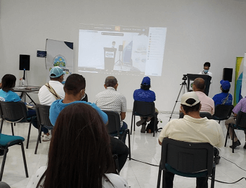
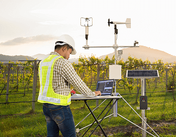
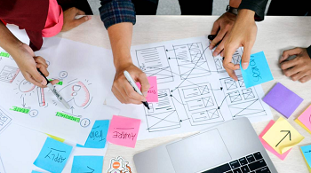
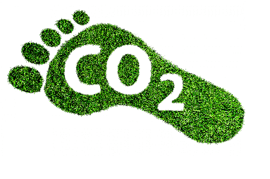

Estudios de impacto ambiental
La Evaluación de Impacto Ambiental (EIA) es el procedimiento obligatorio que permite
identificar, predecir, evaluar y mitigar los potenciales impactos que un proyecto de obra o actividad puede causar al ambiente en el corto, mediano y largo plazo;
siendo un instrumento que se aplica previamente a la toma de decisión sobre la ejecución de un proyecto.
Capacitaciones

Brindamos cursos basados en las necesidades y objetivos de cada empresa, en miras de consolidar buenas practicas ambientales en la estructura de la organizacion.
Abordamos tematicas y conceptos ponderados en la actualidad por los mercados internacionales. Nuestros programas contienen ejes fundamentales como:
herramientas de gestion ambiental, responsabilidad social empresarial, triple impacto, manejo de residuos, eficiencia energetica, etc.
Planes de vigilancia ambiental

El Plan de Vigilancia Ambiental tiene como finalidad comprobar la magnitud real y distribución de los impactos negativos
previstos, y especialmente de los no previstos cuando ocurran, para asegurar así el
desarrollo de nuevas medidas correctoras adicionales cuando se necesiten.
De esta forma, y por escrito, se establece una forma de llevar a cabo inspecciones y controles, lo que servirá para poder asegurar que la protección medioambiental se lleve a cabo de manera adecuada.
Analisis de riesgos ambientales

Realizamos relevamientos de la totalidad de los procesos que configuran tu industria, con el fin de detectar potenciales eventos nocivos. Para luego, cuantificar la probabilidad de ocurrencia y peligrosidad de cada
uno de los riesgos hayados, y asi poder darles el tratamiento correspondiente, ya sea mediante la mitigacion o estrategias preventivas.
Medicion de huella de carbono y huella hidrica

Llevamos a cabo la medicion del total de gases de efectos invernadero emitidos, directa o indirectamente, por tu organizacion; como asi tambien en lo referido al gasto de agua dulce. Esto con el fin de elaborar estrategias
de abordaje para la reduccion de ambos indicadores, incrementando la efiencia en el consumo de recursos de los procesos productivos.